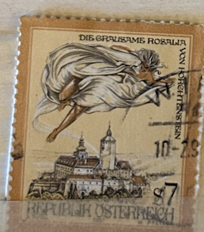
| SOURCE | TITLE| IMAGE MATCH | click to source page |
| www.ebay.com | Austria - 1997 - 7Sh - Tales and Legends of Austria - #17790 ... | 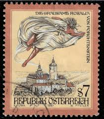 |
| www.ebay.com | 1997 DEFINITIVES S7 Stamp AUSTRIA ÖSTERREICH ... | 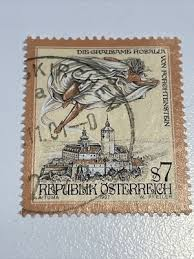 |
| www.hipstamp.com | 1997, Austria 7 Sch, Used, Sc 1718 | Europe - Austria ... |  |
| www.dreamstime.com | The Cruel Rosalia of Forchtenstein, Sages and Legends Serie ... |  |
| www.ebay.com | 1997 DEFINITIVES S7 VF MNH AUSTRIA ÖSTERREICH | eBay |  |
| en.todocoleccion.net | osterreich austria 10 kr. kais konigl año 1886. - Buy ... | 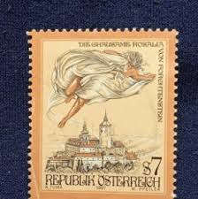 |
| www.amazon.com | Amazon.com: Austria 2212,2226 (Complete.Issue.) unmounted ... |  |
| stampandcovergalaxy.com | SCG2260 - Austria 1997 "The Cruel Rosalia" – Forchtenstein ... | 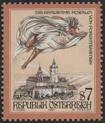 |
| www.shutterstock.com | 6+ Hundred Cruel Hobby Royalty-Free Images, Stock Photos ... | 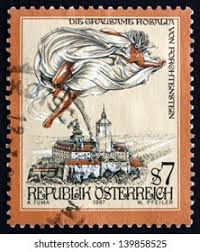 |
| thestampforum.boards.net | Postmark Calendar | The Stamp Forum (TSF) | 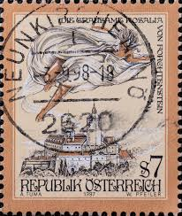 |
| www.123rf.com | Moscow, Russia - January 16, 2018: A Stamp Printed In ... | 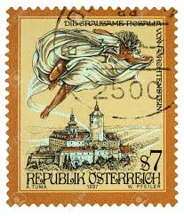 |
| www.ebay.com | AUSTRIA . 1997 Mystical Legends 7s . Mint Never Hinged | eBay | 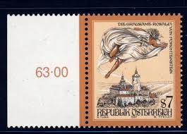 |
| www.dreamstime.com | Stamp Printed in the Austria Shows the Cruel Lady of ... |  |
| esam.ir | یک قطعه تمبر خارجی نو اتریش طبق تصویر |  |
| coinsbolhov.ru | Марка «Призрак Розалии над замком Фортенштайн» 1997 год ... | 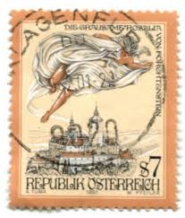 |
| www.shutterstock.com | 6+ Hundred Old Lady Dying Royalty-Free Images, Stock Photos ... | 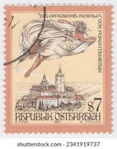 |
| aukro.cz | Známka Rakousko | Aukro | 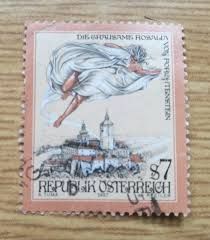 |
| www.willhaben.at | Briefmarken Österreich Schilling, € 4,50 (2130 Mistelbach ... | 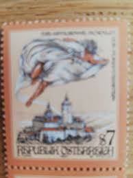 |
| www.osta.ee | Austria 1997; saagad ja legendid; 1 mark; puhas ... | 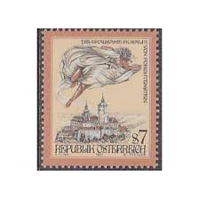 |
| www.todocoleccion.net | austria - v/f 7 s - castillo forchtenstein - ma - Compra ... | 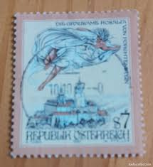 |
| www.lastdodo.nl | Adolf Tuma [1956] postzegelcatalogus - LastDodo | 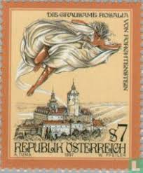 |
| www.hipstamp.com | 1997, Austria 7 Sch, Used, Sc 1718 | Europe - Austria ... | 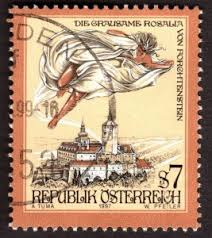 |
| thestampforum.boards.net | Postmark Calendar | The Stamp Forum (TSF) |  |
| aukro.cz | Rakusko 1997 Mi 2212 ine raz. | Aukro | 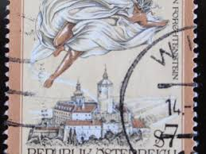 |
| www.ebay.com | AUSTRIA . 1997 Mystical Legends 7s . Used Unique Piece Of ... | 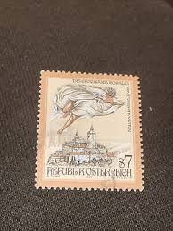 |
| www.alamy.com | AUSTRIA - 1997: A stamp printed in Austria, is shown The ... | 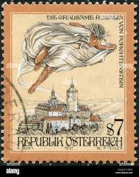 |
| www.willhaben.at | 2er Set Briefmarken 1997 "Die grausame Rosalia von ... | 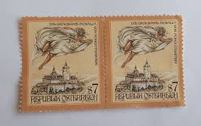 |
| www.modlowarvai.com | Browse Listings in Stamps > Europe > Austria - Lowest Price ... | 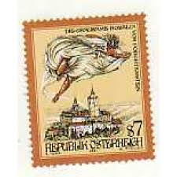 |
| www.allnumis.com | 7 schilling - Terrible Rosalia of Forchtenstein/Burgenland ... |  |
| m.woomoon.com | AUT1731 / 오스트리아 '97 전설 1완 - 수집전문쇼핑몰 우문관 | 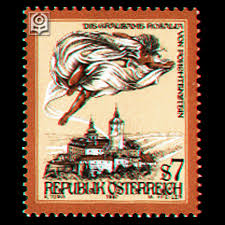 |
| www.reddit.com | helping my grandpa to find out how much any of them might ... |  |
| www.bobshop.co.za | Austria - Austria - 1997/8 - Used for sale in Kraaifontein ... |  |
| www.buyhungarianstamps.com | 2185-2189 Czechoslovakia - Town Hall Clock, Prague, by Josef ... |  |
| www.shutterstock.com | German Reich Circa 1944 Stamp Printed Stock-foto 123605572 ... | 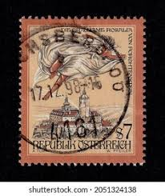 |
| www.todocoleccion.net | sello** de austria 2007, yt 2512 - Compra venta en todocoleccion |  |
| m.poppe-stamps.com | Poppe Stamps: Austria, 1997, 2460, Folktale And Legends ... | 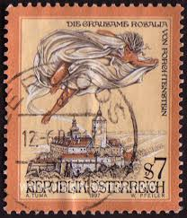 |
| www.amazon.com | Amazon.com: Austria 2020,2023,2024 (Complete.Issue ... | 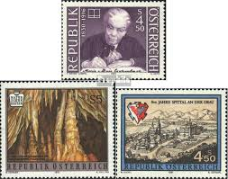 |
| www.ebay.com | Briefmarke: Serie Österreich: 7 Schilling | eBay | 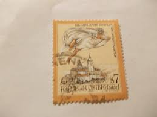 |
| www.mysticstamp.com | 2959 - 1995 32c Love Series: Cherub, booklet single - Mystic ... | 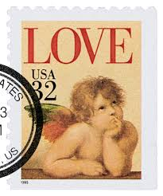 |
| www.buyhungarianstamps.com | #1779-1783 Czechoslovakia - Painting Type of 1967 (MNH ... | 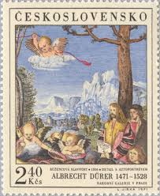 |
| philatelicpursuits.wordpress.com | Christmas Stamps 2019: Austria – Philatelic Pursuits | 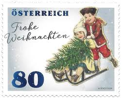 |
| www.alamy.com | Josef stammel hi-res stock photography and images - Alamy | 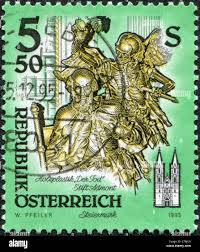 |
| www.pinterest.com | Pin by PillarBoxStudio on Austria Stamps | Stamp, Postage ... | 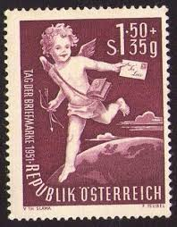 |
| www.flickr.com | austrian stamps Austria 11.00 Schilling Enns postage poste ... | 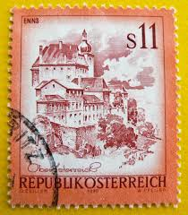 |
| www.linns.com | Austria corrects castle mistake with new stamp |  |
| www.austrianstamps.co.uk | Austrian Stamps - First Republic - 1932 Issues | 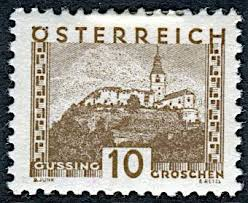 |
| www.skateguardblog.com | The 1966 European Figure Skating Championships | 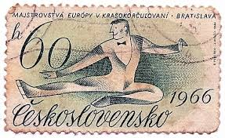 |
| worldstampsproject.org | Philately of Austria, Landscapes Issue (1945/48): Varieties ... | 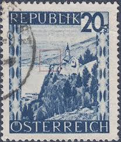 |
| austria-forum.org | Sagen und Legenden - Grausame Rosalia von Forchtenstein ... | 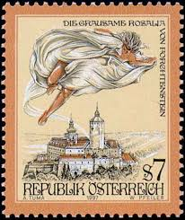 |
| en.wikipedia.org | Artemy Vedel - Wikipedia | 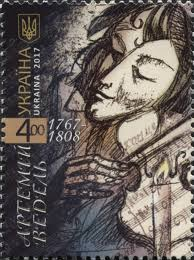 |
| www.posthousewines.co.za | Postage Stamps Wine Names | Post House Winery | Stellenbosch | 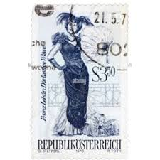 |
| www.ebay.com | Österreich Feldpost Briefstücke AUCON SFOR 1502 a, 2000 | eBay | 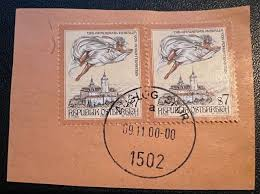 |
| www.todocoleccion.net | 1945 - 1947 - austria - paisajes - yvert 605 - Compra venta ... | 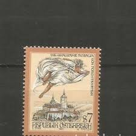 |
| community.postcrossing.com | Results of the poll for the most beautiful Slovak stamp of ... | 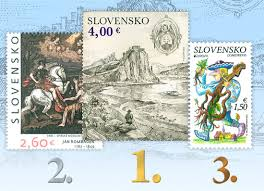 |
| cpslib.org | Czechoslovak Stamp 821 | 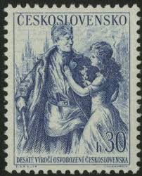 |
| www.manresa-sj.org | Jesuits in the Czech Republic 2 | 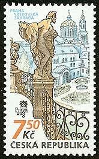 |
| findyourstampsvalue.com | AIR POST STAMPS - PRAGA 1962 Emblem, View of Prague and ... | 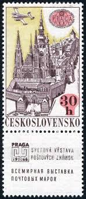 |
| www.mysticstamp.com | 537-38 - 1948-50 Austria - Mystic Stamp Company | 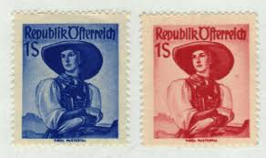 |
| aukro.cz | Burundi 2013 Pes ryšavý a kaktusy DELUXE Mi# 3232 Block 0319 ... | 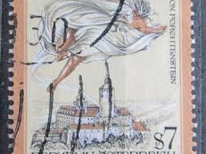 |